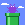
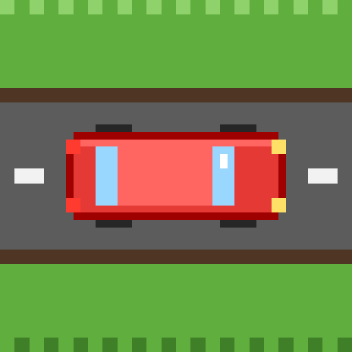
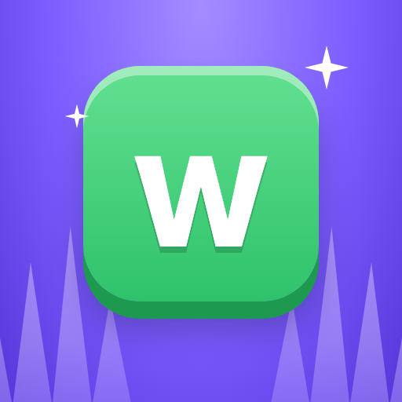

Squash the Bugs
Bugs are climbing out of the pipes. Squash as many as you can in 30 seconds before they ship to production.

Bugs are climbing out of the pipes. Squash as many as you can in 30 seconds before they ship to production.

A traffic-jam puzzle for kids. Slide the cars and trucks out of the way so your ride can get through. The boards grow as you level up.
Play
A spelling game for early readers. Hear a word, spell it and dig up a gem. It moves up or down a level as you go, and there's a mystery word mode too.
Play